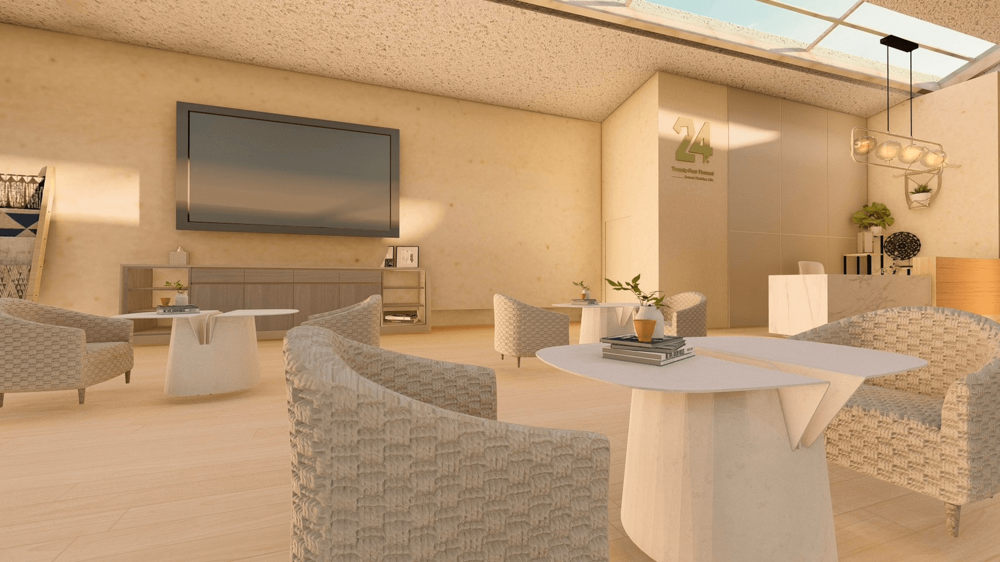
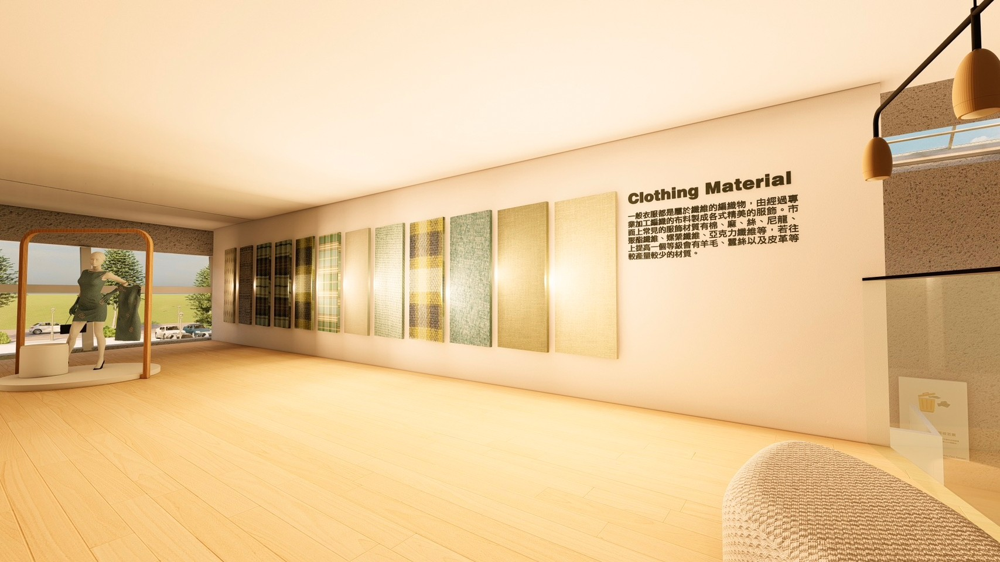
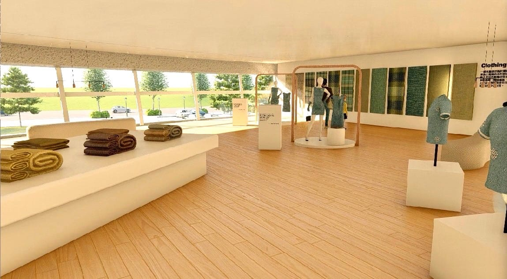
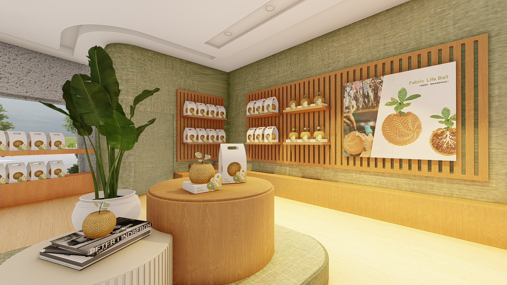

01. Visual Design

品牌主視覺設計

衣物清潔冊

月曆周邊設計
02. Product Design

RE-Clothes Shoes
- ✦ 人道公衛提升
- ✦ 低門檻自製系統
- ✦ 永續材料循環
24% APP
- ✦ 數位產銷履歷
- ✦ 行動衣櫥管理
- ✦ 低碳社群共享
03. Interior Design






24% Cycle Textile
Experience Hall
織布意象建築
以布料曲線概念轉化為擋風牆，對應基地環境氣候。
沉浸式教育核心
整合知識推廣與再製體驗，建立完整循環流程。
品牌正面影響
向上屋簷語彙象徵對服飾產業帶來正向的社會改變。
點擊查看詳情 →